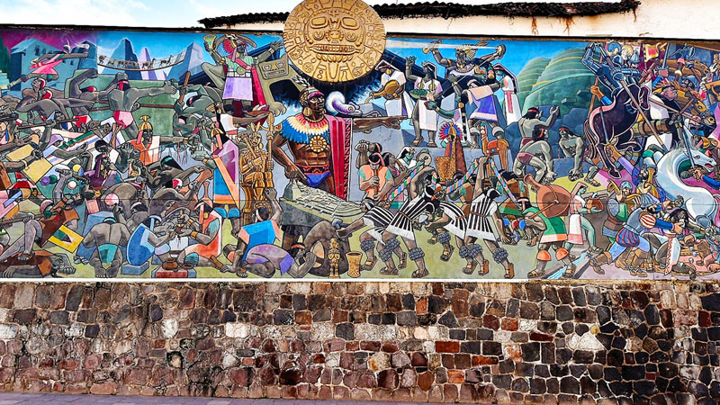

印加文明是南美洲最偉大的古代文明之一，從13世紀開始在安第斯山脈地區興起，並在15世紀建立了龐大的印加帝國，被稱為"塔萬廷蘇尤"（Tawantinsuyu），意為"四方之地"。
印加帝國以其卓越的建築技術、精密的道路系統和先進的農業方法聞名。他們沒有使用文字系統，而是通過稱為"基普"（quipu）的繩結系統來記錄信息。
印加社會有嚴格的等級制度，由薩帕·印卡（Sapa Inca）皇帝統治，被認為是太陽神因蒂的後代。帝國擁有複雜的行政體系和廣泛的道路網絡，連接了從現代厄瓜多到智中的廣大領土。
印加人的宗教信仰以自然崇拜為中心，特別尊崇太陽神因蒂（Inti）、大地女神帕查瑪瑪（Pachamama）和創世神維拉科查（Viracocha）。他們建造了許多神廟和祭祀場所，馬丘比丘就是其中之一。
